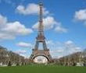
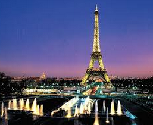

이 구조물은, 프랑스 혁명의 100주년을 기념하기 위해 개최한 세계 박람회인, 1889년 만국 박람회의 입구로서 1887년부터 1889년까지 건축되었다.  모리스 쾨클랭의 구조 설계를 바탕으로, 300명의 작업자가 정련된 부품(단단히 제련된 건축용 철제) 18,038 조각을 50여 만 개의 리벳을 이용해 조립하였다. 이 작업에 공동으로 참여한 건축가는 에밀 누기에와 모리스 쾨클랭, 그리고 스테펭 소베스트르였다. -위키백과중에서-